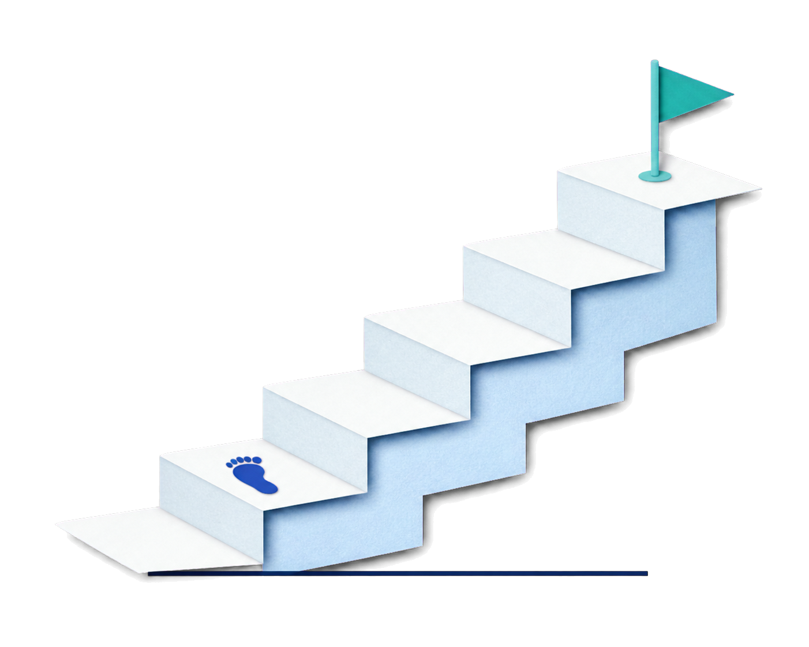
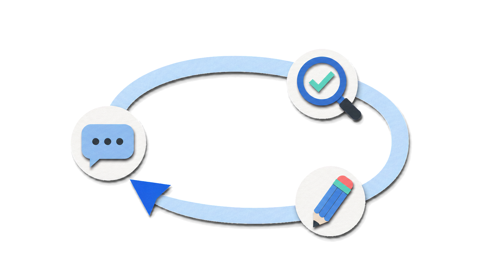
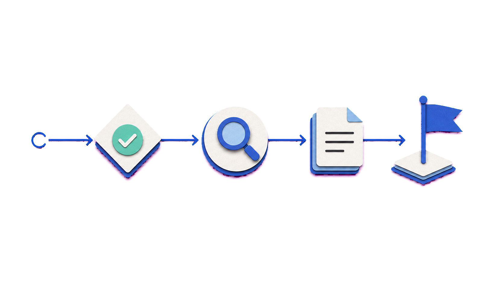
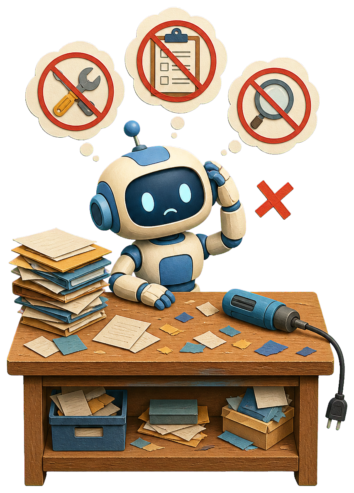
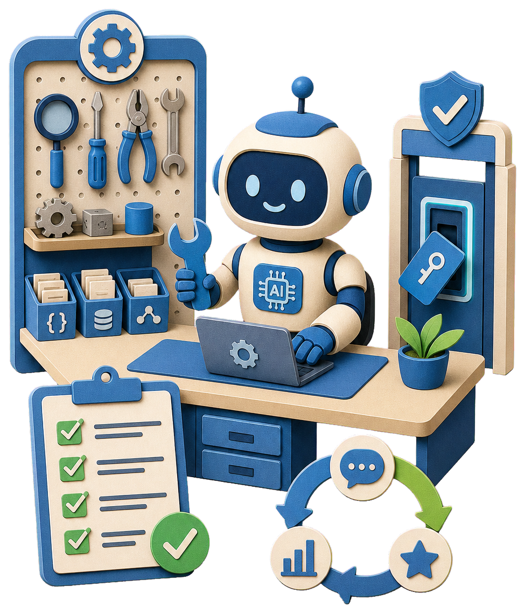

1되짚기와
되짚기와
역할 지도
1차시 회고 · 역할 나누기
초안·후보·코드를 빠르게 만들어 냅니다.
화면과 문서를 직접 열어 눈으로 확인합니다.
무엇을 넣고 무엇을 뺄지는 사람이 정합니다.

2차시 전체 흐름
1차시에 요청하고 확인하고 고쳤다면, 2차시는 기준을 정해 반복되는 일을 맡깁니다.
1차시 회고 · 역할 나누기
요청에 담을 다섯 칸
함께 넘길 것 · 긴 대화
기준은 파일에 남기기
1차시 웹에 기준 적용
NEWS_AGENT.md로 맡기기

2차시 · Coding Agent에게
일을 맡기는 법
PART
1차시에서 무엇을 했고, 오늘 누가 무엇을 맡는가
Prompt는 더 깊이, Context · Markdown 기준은 새로 배웁니다. 요청을 설계하고, 기준을 파일로 남기는 데까지 갑니다.
고리는 그대로입니다. 앞에 결정이 붙고, 결정을 파일로 남기는 단계가 늘었습니다.
요청 → 확인 → 수정
기준 결정 → 요청 → 확인 → 수정


두 도구는 묻는 질문이 다릅니다. AI Chat에는 "무엇을·왜"를 묻고, Coding Agent에는 "어떻게 저장할지"를 맡깁니다.
| 비교 항목 | AI Chat | Coding Agent |
|---|---|---|
| 핵심 역할 | 기획 · 아이디어 발굴 · 질문 · 비판 | 구현 · 저장 · 자동화 |
| 주요 질문 | 무엇을 만들까? 왜 지금 해야 할까? | 어떻게 구현하고 어디에 저장할까? |
| 주요 산출물 | 아이디어 정리 · 구조 설계 · 의사결정 | 코드 · 문서 파일 · 폴더 구조 |
| 사용 시점 | 작업 시작 전 · 기획 · 방향 설정 단계 | 결정이 끝난 후 · 구현 · 저장 단계 |
| 강점 | 폭넓은 사고 · 다양한 관점 · 빠른 정리 | 일관된 구현 · 자동 저장 · 재현성 |
PART
무엇을, 어디까지, 무엇이 되면 끝인가
목표·범위·조건·출력·완료 기준을 요청에 담는다
코드부터 쓰게 하지 말고, 계획을 먼저 보여 달라고 합니다.
무엇을 만들지
어디에 만들지
무엇을 지켜야 하는지
다 되면 무엇을 확인할지
그래서 계획을 먼저 보여 달라 하고, 사람이 확인한 뒤에 시작합니다.
Prompt Engineering은 AI에게 어떤 요청을 어떻게 전달할지 설계하는 방법입니다. 다섯 칸을 채우면 AI가 추측할 빈칸이 줄어듭니다.
AI 뉴스 찾아줘.
최근 24시간 동안 공개된 AI 관련 주요 뉴스를 찾아줘.목표 · 범위 중요도가 높은 뉴스 5개만 선정하고, 각 뉴스에 대해 제목, 핵심 내용, 중요한 이유, 출처를 정리해줘.범위 · 출력 중복 기사는 제외하고 확인되지 않은 정보는 작성하지 마.조건 결과는 날짜별 Markdown 파일로 저장해줘.출력
AI에게 일을 시키기 전에, AI에게 그 일을 시킬 문장을 먼저 써 달라고 합니다.
한 번뿐인 질문은 바로 시키고, 반복해서 쓸 지시는 프롬프트부터 받아 둡니다.
완료 기준은 «무엇이 보이면 끝인가»를 미리 적은 문장이고, 테스트는 그 문장이 실제 화면에서 나오는지 확인하는 행동입니다.
| 완료 기준 | 테스트 | |
|---|---|---|
| 무엇인가 | 확인할 수 있는 장면을 적은 한 문장 | 그 장면이 나오는지 직접 해 보는 일 |
| 언제 | 만들기 전에 미리 | 화면을 만든 뒤에 |
| 예 | "버튼을 누르면 목록에 그 줄이 보인다" | 정상 입력 · 빈칸 · 엉뚟한 값으로 각각 눌러 본다 |
| 안 되면 | 기준을 고치는 게 아니라 그대로 둡니다 | 미완료로 보고 원인을 다시 찾습니다 |

PART 2 · 바로 적용하기
“이번에 할 것”과 “끝난 것”을 정하면 기능이 늘어나는 것을 막을 수 있습니다.
핵심 가치를 보여 주는 기능 하나만 남깁니다.
예: 할 일을 입력해 목록에 추가→꾸미기·검색·알림은 나중 아이디어로 따로 둡니다.
기능을 버리는 것이 아니라 미룹니다.→무엇을 누르면 무엇이 보이는지를 문장으로 적습니다.
버튼을 누르면 목록에 그 줄이 보인다.PART
AI가 지금 보고 있는 것
무엇을 함께 넘기고, 긴 대화에서는 무엇이 약해지는가
Context Engineering은 AI가 필요한 정보를 제대로 참고하도록 맥락을 구성하는 방법입니다. 같은 요청이라도 함께 넘긴 자료만큼 결과가 달라집니다.
무엇을 만드는 중인가
요구사항·기존 문서·참고 자료
지켜야 할 작업 규칙
실패했을 때 나온 그대로
채팅 하나하나가 하나의 세션입니다. 새 세션을 열면 AI는 이전 세션에서 정한 것을 모릅니다. 결정이 그 세션의 컨텍스트(그 대화 안에서만 오간 맥락) 안에만 있었기 때문입니다.
새 대화를 열 때마다
이름과 방향을 처음부터 다시 설명합니다
다음 대화가 그 파일을 읽고 이어갑니다
설명을 반복하지 않아도 됩니다
범위·순서·증거·멈춤 같은 약속은 프롬프트 한 줄보다 큰 바깥 구조에 놓입니다.
프롬프트가 컨텍스트 안에, 컨텍스트가 하네스 안에 들어 있습니다.
하네스가 왜 필요한가 · 모델이 스스로 못 하는 세 가지
“이제 프롬프트는 필요 없다”는 말은 정확하지 않습니다. 없어진 게 아니라 가장 안쪽 자리로 들어간 것입니다.
앞 장에서 본 «앞 대화가 밀려 사라진다»가 실제로 무엇을 잃게 하는지입니다.
긴 대화나 장기 작업에서 처음에 전달한 요구사항이나 조건이 약해지거나 누락될 수 있습니다.
처음 조건 · 5개만 · 출처 필수
요청 · 답변
수정 요청 · 답변
또 수정 요청 · 답변
예: 개수 제한이 빠짐
예: 출처 없는 항목이 섞임
기준 문서 (.md)
5개만 선정 · 출처 기록
요청할 때마다 다시 읽힘
같은 요청, 다른 결과입니다. 차이는 기준을 넘겼는가뿐입니다.
PART
대화에 흘리지 않고, AI가 매번 읽을 기준 파일로 남긴다
텍스트에 약속된 기호로 문서 구조를 표시하는 가벼운 문서 형식입니다.
일반 텍스트와 달리 특정 기호가 정해진 서식(제목·굵게·목록)으로 바뀝니다.
문서에 쓰인 기호 10개
| 기호 | 화면에서 되는 것 |
|---|---|
# | 제목(h1) |
## | 소제목(h2) |
**굵게** | 강조(bold) |
- | 목록(list) |
- [ ] | 할 일(미완료) |
- [x] | 할 일(완료) |
> | 인용(quote) |
--- | 구분선(hr) |
[글](주소) | 링크(link) |
``` | 코드 블록 |
오늘의 기획 메모
핵심 아이디어
퇴근길 직장인을 위한 하루 기록
AI 초안은 사람이 다시 확인
console.log("완료했습니다")
세 문서는 각각 다른 질문에 답합니다. 책임이 겹치면 나중에 어디를 고칠지 헷갈립니다.
무엇을 만드나
"이 앱은 무엇을 하나요?"
어떻게 보이나
"버튼은 무슨 색인가요?"
어떻게 일하나
"저장은 어디에 하나요?"
PART 5에서 직접 만듭니다PRD(제품 요구사항 문서)는 무엇을 왜 만드는지 적어 팀에 방향을 알리는 기획 문서입니다.
PRD · 기획서Product Requirements Document

prd.md · AI가 읽는 기획서폴더에 두는 Markdown 파일
앞 장의 다섯 항목만 빠짐없이 채우면 됩니다. 길이가 아니라 항목이 기준입니다. 프로젝트가 커지면 같은 다섯 항목이어도 길어집니다.
에이전트가 prd.md를 읽고 무엇을 만들지 파악합니다.대상·핵심·흐름을 먼저 확인합니다.
만든 결과를 prd.md 기준과 맞춰 봅니다.제외·완료 항목까지 지켰는지 확인합니다.
즉 prd.md는 에이전트가 시작하기 전과 끝난 뒤 두 번 참고하는 기준 문서입니다.
다섯 항목 가운데 하나라도 비워 두면, 그 자리를 AI가 추측으로 메웁니다.
빈칸은 AI의 추측이 됩니다. 결과가 흔들립니다.

이 제목이 맡는 항목
같은 문서라도 넘기는 방식에 따라 다음 대화에서 살아남는지가 갈립니다.
이 폴더의 prd.md를 먼저 읽고 시작해 주세요.
1차시 타자 게임을 «핵심 기능»과 «흐름»대로 고쳐 주세요.
제가 꼭 고치고 싶은 곳: [지금 화면에서 불편한 곳 하나]
«제외»에 적힌 것은 붙이지 말고, 잘 되는 곳은 그대로 두세요.
고치기 전에 어느 파일을 바꿀지 먼저 알려 주세요.
다 고치면 «완료 기준»과 맞는지 스스로 대조해서 알려 주세요.
대화에만 말한 기준은 창을 닫으면 사라지지만, 파일에 적은 기준은 다음 실행에서 다시 읽힙니다.
새 대화를 열거나 대화가 길어지면 기준이 약해집니다. 매번 다시 설명해야 합니다.
실행할 때마다 처음부터 다시 읽힙니다. 나도 Agent도 같은 기준을 봅니다.
PART 4 · 바로 적용하기
코드만 바꾸면 다음 AI 작업이 낡은 기준을 다시 읽습니다. 문서부터 바꾸고 다시 확인합니다.
대상·기능·제외 중 하나가 바뀌었다면 멈춥니다.
“알림은 이번에 빼자”→바뀐 결정을 문서의 해당 항목에 반영합니다.
제외 항목에 알림을 적기→AI가 바뀐 문서를 읽은 뒤, 화면에서 반영을 확인합니다.
“prd.md를 다시 읽고 적용해”PART
도구·권한·검증, 그리고 기준 적용
1차시에 만든 웹에 기준을 적용하고, AI가 일할 환경을 갖춘다
앞 50분에 정한 기준을 1차시에 만든 웹에 적용하고, 같은 방식으로 뉴스 조사 업무를 Agent에게 맡깁니다.
색·여백·순서·문구 중 지킬 것을 두 줄 이상 직접 적습니다.
화면을 캡처해 AI Chat에서 기준 초안을 받습니다.
실습 ① 방법 B 예시 프롬프트
첨부한 화면을 보고 design.md 초안을 써 주세요.
· 목적: 이 화면의 디자인 기준을 파일로 남기기
· 입력: 첨부한 화면은 제가 1차시에 만든 타자 게임입니다
· 출력: 색 · 여백 · 순서 · 문구 네 제목 아래 한 줄씩
· 검증: 화면에 없는 것은 만들지 말고, 모르면 [확인 필요]로 남기기
초안만 보여 주세요. 한 줄은 제가 고친 뒤 저장합니다.
네 제목을 정해 주면 빠진 기준이 보입니다
«검증» 줄이 지어낸 기준을 막습니다
실습 ① 예시 프롬프트
이 폴더의 design.md를 먼저 읽어 주세요.
[내 판단] 이번에 바꾸고 싶은 곳: [화면의 어느 부분]
· 꼭 반영할 기준 2가지: [design.md에서 내가 고른 것]
· 절대 건드리지 말 것: [지금 마음에 드는 부분]
고른 2가지를 지금 화면에 적용해 주세요.
무엇을 · 어디에 적용했는지 파일 이름과 함께 알려 주세요.
휴대폰 폭으로 좁혀도 글자와 버튼이 화면 밖으로 나가지 않게 해 주세요.
design.md에 없는 기준은 만들지 말고, 모르는 것은 [확인 필요]로 남기세요.
바꿀 곳이 애매하면 고치지 말고 저에게 먼저 물어봐 주세요.
문서를 기준으로 삼게 해야 화면과 문서가 갈라지지 않습니다.
«건드리지 말 것»을 정해 두면 마음에 들던 부분이 같이 바뀌지 않습니다.
화면을 열어 2가지가 실제로 바뀌었는지 확인합니다.
이런 작업에 맞습니다. 매번 같은 순서로 끝나는 일. “표를 읽고, 합계를 내고, 화면에 띄워”
이런 작업에 맞습니다. 상황에 따라 할 일이 달라지는 일. “이 폴더를 보고 뭘 고쳐야 할지 정해서 고쳐”
에이전트는 다음 행동을 스스로 고릅니다. 이제 그 선택을 실제로 실행하고 확인해 줄 구조가 필요합니다.

선택은 해도 실행이 끊김무엇을 열고 고칠지 정해도, 실제 작업을 이어 줄 도구·권한·확인 구조가 없습니다.

선택 → 실행 → 확인이 연결됨도구·규칙·권한·테스트 결과가 에이전트의 판단을 실제 일로 이어 줍니다.
하네스 엔지니어링은 에이전트가 고른 다음 행동을 실행·확인·다음 판단으로 연결하는 작업 환경 설계입니다.
하네스라는 이름의 비유
마구는 말의 힘을 줄이는 장치가 아니라, 힘을 수레·도구·목적지와 연결하는 장치입니다.

재갈·고삐 = AI가 따라야 할 규칙과 권한

말 → 마구·고삐 → 수레·도구 → 확인 문
하네스 엔지니어링도 AI를 묶는 일이 아니라, AI의 힘이 제대로 일로 이어지도록 환경을 설계하는 일입니다.
한 문장 정의
AI가 일하는 동안 환경·도구·규칙·확인 구조를 설계하는 일모델이 파일을 직접 고치거나 테스트를 직접 돌리는 것이 아닙니다. 하네스가 도구와 작업 환경을 연결해 그 일을 가능하게 합니다.
모델이 다음 행동과 사용할 도구를 고릅니다.
권한을 확인하고, 파일·셸·브라우저 도구를 움직입니다.
화면·테스트·오류를 모델에게 보내 다음 판단을 돕습니다.
판단 → 실행 → 확인 → 다음 판단을 되풀이하는 것이 Loop(반복)입니다.
핵심은 “잘해”라고 더 길게 말하는 것이 아니라, AI가 제대로 일할 환경을 만드는 것입니다.
하네스는 모델과 도구·작업 환경 사이의 반복 실행을 운영하는 시스템입니다.
모델이 다음 행동과 도구 사용을 판단하면, 하네스가 호출을 실행하고 결과를 다시 전달하며 상태·컨텍스트·권한과 실행 흐름을 관리합니다.
모델 자체는 외부 파일을 직접 저장하거나 명령을 실행할 수 없으며, 실행 결과도 하네스를 통해 전달받아야 합니다.
모델 + 하네스 + 연결된 도구·작업 환경 → 실제 행동할 수 있는 에이전트 시스템
하네스 안에 도구·작업 환경이 포함되기도 하며, 시스템에 따라 구성 방식이 다를 수 있습니다.
방금 본 반복 안에 «어떤 도구로, 어떤 행동을 하게 할지»를 미리 정해 두는 것입니다.
이 네 문장이 이미 하네스입니다. 반복 안에 이 약속을 넣으면, 사람이 매번 설명하지 않아도 장치가 확인하고 멈춥니다. 이 약속은 프롬프트 한 줄보다 바깥의 구조에 놓입니다.
앞서 본 “맡기기 전과 끝난 뒤까지”가 실제로는 이 여섯 가지입니다. 준비물은 AI가 일하는 동안 넣지 않습니다. 맡기기 전과 끝난 뒤, 작업을 앞뒤로 감쌉니다.
맡기기 전에 준다
끝난 뒤에 확인한다
사후 검증이 비면 결과를 판정할 기준이 없어 사람이 매번 눈으로 보는 수밖에 없습니다. 앞뒤가 다 있어야 하네스입니다. 이 여섯 가지 이름은 확정 표준이 아니라 사람마다 묶는 방식이 다릅니다.
앞 장의 «맡기기 전에 준다»를 담는, 작업 전에 먼저 읽는 규칙 파일입니다.
AI의 기억이 아니라, 사람이 적어 둔 만큼만 지키는 고정된 규칙입니다. 하위 폴더에 규칙 파일을 또 두면 위쪽 규칙과 합쳐지는 방식도 도구마다 다를 수 있습니다.
파일 밖을 채우는 것이 하네스입니다. 아래 네 가지는 AGENTS.md에 적어 두는 항목이자, 도구 설정으로 강제하는 항목입니다. 이 넷이 함께 작동해야 «AI에게 맡기는 시스템»이 됩니다.
안전 규칙이 항상 최우선이고, 되돌리기 어려운 행동은 승인 전에 멈춥니다.
실제 폴더 대신 격리된 공간에서 돌리면, 잘못돼도 그 공간만 버리면 됩니다.
한 일과 남은 일을 적어 두지 않으면 처음부터 다시 설명해야 합니다.
실패한 이유를 남겨 두면, 다음번엔 같은 자리에서 다시 걸리지 않습니다.
네 가지를 갖춰도 지키는 것은 다른 문제입니다. 다음 장에서 그 차이를 봅니다. 묶는 이름은 사람마다 다릅니다. 이름보다 «무엇을 정해 두었는가»가 중요합니다.
둘 다 «하지 마»라고 말하지만, 넘어갈 수 있느냐가 다릅니다.
| 규칙 파일 · AGENTS.md | 권한 · 승인 설정 | |
|---|---|---|
| 하는 일 | 지키도록 유도합니다 | 넘어갈 수 없게 강제합니다 |
| 어디에 있나 | 프로젝트 폴더 안 파일 | 도구의 승인·권한 설정 |
| 어길 수 있나 | 지시가 부딪히면 지나칠 수 있습니다 | 실행 자체가 멈추고 물어봅니다 |
| 기준 | 내가 적은 만큼 | 프로젝트 폴더(루트)가 경계 |
되돌릴 수 있으면 규칙, 되돌릴 수 없으면 권한으로 막습니다. 1차시에서 정한 «작업은 프로젝트 폴더 안에서»가 여기서 장치로 강제됩니다. 폴더 밖은 규칙이 아니라 권한이 막습니다.
프로젝트마다 다르지만, 앞서 본 이 세 종류를 적습니다.
한 문장이 한 줄입니다. 길게 설명하지 않고 지킬 것만 짧게 적습니다.
이 세 종류가 바로 다음 실습의 뼈대입니다. 내 폴더를 읽게 한 뒤 «이 규칙 형식대로 AGENTS.md를 채워 줘»라고 에이전트에게 요청하는 것도 방법입니다. 나온 초안에서 내가 고칠 줄만 고칩니다.
만들 것 · 1차시에 만든 웹 폴더의 AGENTS.md 6~10줄 고를 수 있는 규칙 — 정적 웹만 사용 · 서버 코드 금지 · 한 번에 하나만 수정 · 수정 후 재확인. 무엇을 고를지 모르겠으면 AI Chat에 물어 추천받아도 됩니다.
“내 폴더를 읽고 뭐가 있고 뭐가 부족한지 알려 줘. 아직 고치지는 마.”
“이 폴더에 둘 AGENTS.md 초안을 6~10줄로 써 줘. 지켜야 할 규칙·먼저 읽을 자료·반복할 절차를 각각 한 줄 이상 넣고, 모르는 것은 [확인 필요]로 남겨 줘.”
“세 번째 규칙은 내 프로젝트에 안 맞아. 이렇게 바꿔 줘.”
“AGENTS.md로 저장해 줘.” — 파일을 직접 열어 보고, 다음 요청에서 그 규칙을 실제로 지키는지 확인하면 끝입니다.
실습 ② 예시 프롬프트
이 폴더를 먼저 읽고 무엇이 있고 없는지 알려 주세요. 아직 고치지 마세요.
[내 프로젝트] 만드는 것: [한 줄 정의]
· 지켜야 할 규칙: [꼭 지켰으면 하는 것 하나]
· 먼저 읽을 자료: [예: design.md]
· 반복할 절차: [예: 수정 뒤 브라우저에서 다시 확인]
그다음 이 형식으로 AGENTS.md 초안을 6~10줄로 써 주세요.
모르는 것은 [확인 필요]로 남기고, 저장은 제가 확인한 뒤에 합니다. 먼저 초안만 보여 주세요.
세 종류의 재료를 채우면 규칙·자료·절차가 내 프로젝트의 약속이 됩니다.
«[확인 필요]»가 없으면 모르는 내용을 그럴듯하게 지어낼 수 있습니다.
초안에서 내가 고친 줄이 최소 1개인지 확인한 뒤에만 저장합니다.
PART
역할과 기준을 정해 반복되는 조사 업무를 맡긴다
참가자가 직접 뉴스 조사 업무를 Agent에게 맡깁니다. 역할과 기준을 파일로 정하고, 결과는 원문과 대조합니다.
NEWS_AGENT.md
날짜별 뉴스 Markdown
Agent가 매번 처음부터 설명받지 않고, 문서를 참고해 일관된 기준으로 작업하게 합니다.
NEWS_AGENT.md
## 역할AI 관련 주요 뉴스를 찾아 정리한다
누구로 일하나
## 조사 대상최근 24시간 동안 공개된 AI 뉴스
무엇을 찾나
## 뉴스 선정 기준중요도가 높은 뉴스 5개
무엇을 고르나
## 제외할 정보중복 기사 · 확인되지 않은 정보
무엇을 빼나
## 출력 형식제목 · 핵심 내용 · 중요한 이유 · 출처
어떤 모양으로 남기나
## 검증 기준실제 존재 · 날짜 · 요약 일치 · 출처
무엇으로 확인하나
완료 기준NEWS_AGENT.md를 열었을 때 여섯 제목 아래가 모두 채워져 있습니다.
실습 ③ 예시 프롬프트
이 폴더에 NEWS_AGENT.md 초안을 써 주세요. 아직 저장하지 마세요.
[내 기준] 조사 대상: [예: 최근 24시간 동안 공개된 AI 관련 뉴스]
· 뉴스 선정 기준: [예: 중요도가 높은 뉴스 5개]
· 제외할 정보: [예: 중복 기사 · 확인되지 않은 정보]
역할 · 조사 대상 · 뉴스 선정 기준 · 제외할 정보 · 출력 형식 · 검증 기준 여섯 제목으로 써 주세요.
출력 형식에는 제목 · 핵심 내용 · 중요한 이유 · 출처를 넣어 주세요.
제가 안 적은 기준은 만들지 말고, 모르는 것은 [확인 필요]로 남기세요.
여섯 제목을 정해 주면 빠진 기준이 바로 보입니다.
«아직 저장하지 마세요»가 확인 전 저장을 막습니다.
여섯 제목 아래가 모두 채워졌는지 봅니다.
계정·권한에 따라 웹 검색이 막히면 강사 시연을 함께 보고, 3단계 원문 확인은 직접 합니다.
완료 기준뉴스마다 출처 링크가 있고, 링크가 실제 기사로 열립니다.
실습 ④ 예시 프롬프트
이 폴더의 NEWS_AGENT.md를 먼저 읽고 그 기준대로 진행해줘.
최근 24시간 동안 공개된 AI 관련 주요 뉴스를 찾아줘.
중요도가 높은 뉴스 5개만 선정하고, 각 뉴스에 대해 제목, 핵심 내용, 중요한 이유, 출처를 정리해줘.
중복 기사는 제외하고 확인되지 않은 정보는 작성하지 마.
결과는 날짜별 Markdown 파일로 저장해줘.
기준 파일과 요청이 같은 방향을 가리킵니다.
«확인되지 않은 정보는 작성하지 마»가 지어낸 기사를 막습니다.
뉴스마다 출처 링크가 실제로 열리는지 봅니다.
검색 결과를 그대로 옮기지 않습니다. 원문을 확인한 뒤 세 칸 중 하나에 넣습니다.
원문이 확인된 주요 뉴스.
제목·핵심 내용·중요한 이유·출처로 요약합니다.
중복 기사 · 확인되지 않은 정보.
같은 소식을 다룬 기사는 하나만 남깁니다.
원문을 찾지 못한 뉴스.
지우지 않고 [확인 필요]로 표시합니다.
요약 한 줄 형식제목 · 핵심 내용 · 중요한 이유 · 출처(원문 링크)
날짜가 파일 이름이 되면 오늘 결과와 다음 날 결과가 섞이지 않습니다. 기준 파일은 한 곳에 그대로 둡니다.
2차시_실습/프로젝트 폴더
NEWS_AGENT.md매번 먼저 읽는 기준
news/결과를 모으는 폴더
2026-09-10.md예: 오늘 결과
2026-09-11.md예: 다음 날 새 파일
# 2026-09-10 AI 뉴스
## 1. [기사 제목]
- 핵심 내용: [한두 문장]
- 중요한 이유: [한 문장]
- 출처: [매체 · 원문 링크]
## 2. …
Agent가 «뉴스 5건 정리했습니다»라고 해도, 그것은 확인이 아니라 보고입니다.
완료했습니다. 뉴스 5건을 정리해 저장했습니다.
파일을 열어 보기 전까지는 사실인지 알 수 없습니다.
직접 연 것만 완료로 셉니다
복구 안내
검색 결과가 나오지 않았습니다. 조사 대상을 «[예: AI 모델 발표 뉴스]», 기간을 «[예: 최근 24시간]»으로 좁혀 다시 찾아 주세요.
각 뉴스에는 원문 링크를 함께 적고, 원문을 확인하지 못한 항목은 [확인 필요]로 남겨 주세요.
매번 직접 요청하지 않고 정해진 시간에 반복 실행하도록 설정하는 방법을 소개합니다.
반복 실행 설정은 계정·권한에 따라 다를 수 있어 강사가 화면으로 보여 줍니다.
AI Chat물어볼 때만 답합니다.
Agent정해진 시간에 같은 일을 반복합니다.
반복되어도 기준은 NEWS_AGENT.md에서 읽고, 결과는 사람이 검증합니다.
앞 장처럼 같은 조사를 되풀이하는 것이 Loop라면, Graph는 여러 작업이 서로 연결되는 방식입니다. 용어보다 모양을 기억합니다.
PART
만든 결과를 원문으로 확인하고, 만든 쪽과 확인하는 쪽을 나눈다
레퍼런스란 우리 화면을 만들 때 참고하는 다른 서비스·화면입니다. 그대로 베끼는 자료가 아니라, 왜 그렇게 만들었는지 뜯어보는 관찰 대상입니다.
통째로 복제하지 않기
↓
색 · 여백 · 글자 · 정보 순서를 관찰하기
↓
무엇을 참고할지 · 무엇은 안 따라 할지도 정하기
검색해서 나온다고 무료가 아닙니다. 이미지·글꼴은 출처와 사용 조건을 먼저 확인합니다.

만든 Agent에게 «맞지?»라고 물으면 동의하는 답이 나오기 쉽습니다. 검토자 관점에서 원문과 다시 대조합니다.
«이 뉴스 정리, 맞지?»
«각 뉴스의 날짜·제목·출처를 원문과 비교해 다른 점만 적어 줘.»
PART
오늘 정한 기준을 어디에 남기고, 무엇으로 확인하는가
PART 5 · Harness
AI가 일하는 중간을 통제하려 하기보다, 넣어 주는 것과 확인하는 것을 분명히 합니다.

PART 8 · 오늘 정리
증거를 강하게 만들고, 반복되는 판단은 알맞은 장소에 저장합니다.
PART 8 · 오늘 정리
한 번에 전부 완성하려 하지 말고, 화면 하나 · 동작 하나 · 확인 하나씩 이어 갑니다.
대화창이 아니라 폴더에 남은 파일이 오늘의 결과입니다.
NEWS_AGENT.md역할 · 조사 대상 · 선정 기준 · 제외 · 출력 형식 · 검증 기준
열어서 여섯 제목 확인news/날짜.md그날 고른 뉴스의 제목 · 핵심 내용 · 중요한 이유 · 출처
날짜별 파일이 생겼는지 확인design.md · AGENTS.md1차시 웹 폴더에 만든 기준 파일 · 화면 기준과 작업 규칙
열어서 내가 고친 줄 확인반복 실행(Schedule)은 강사 시연으로 방식을 확인했습니다.
PART 4 · Markdown으로 기준을 파일에
무엇을 만들지, 어떻게 보일지, 어떻게 일할지를 파일로 나눠 두고 AI에게 읽힙니다.

이 시스템은 한 번에 완성하는 설계가 아닙니다. 같은 문제가 두 번 나올 때마다 그 자리를 한 칸씩 메우는 일입니다.
한 번뿐인 실수까지 규칙으로 만들면 규칙이 길어져 아무도 읽지 않습니다. 두 번 이상 반복될 때만 넣습니다
오늘 본 것을 전부 갖출 필요는 없습니다. 막히는 자리가 생겼을 때 한 칸씩 올립니다.
다음 차시
오늘 익힌 «기준은 파일에 · 결과는 원본과 대조»를 데이터 작업에 그대로 씁니다.
오늘NEWS_AGENT.md에 기준 적기→3차시분석 계획을 먼저 확인받기
오늘뉴스를 원문과 대조→3차시대시보드 숫자를 원본 데이터와 비교
design.md를 쓰고, AGENTS.md까지 더해도 하네스의 한 칸, 즉 «맡기기 전에 주는 것»만 채운 것입니다. 나머지 네 칸은 아직 빕니다. 이 칸들을 하나씩 채워야 합니다.

권한 · 실행 환경 · 기록은 별도 도구가 아니라 AGENTS.md 안에 적어 둘 수 있습니다. AGENTS.md가 «어떻게 일하나»를 담는 파일이라, 끝난 뒤 무엇을 확인할지·어디까지 손대도 되는지·무엇을 남길지가 다 여기 들어갑니다.
둘 중 하나를 고르는 게 아닙니다. 항목마다 두 질문에 답하면 자리가 정해지고, 자리가 방법을 정합니다.
두 질문 모두 “아니오”에 가까울수록 오른쪽 위입니다. 여기는 적어 두는 것으로 부족해서 장치로 막습니다.
둘 다 파일에 적어 두는 것이지만 역할이 다릅니다.
정해진 과정을 반복해서 시키고 있다면 Skill로 만듭니다. 같은 지시를 채팅에 세 번 넘게 붙여넣고 있다면 그 신호입니다. 매번 지킬 것을 Skill에만 넣으면 다른 작업에서 놓치고, 반복 절차를 규칙 파일에 넣으면 무관한 작업에서도 매번 읽힙니다.
사실이면 규칙 파일, 절차면 Skill
“새 화면 추가해 줘”라고 시킨 순간에만 열립니다
그래서 반복 절차를 규칙 파일에 넣으면 모든 작업에서 그 길이를 다시 읽습니다.
현재 슬라이드
슬라이드 제목